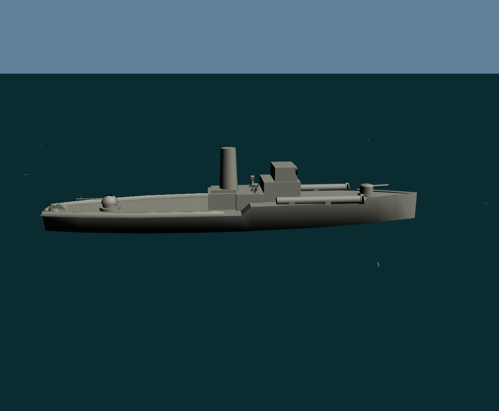

Torpedos: Platz schaffen, vorhalten, schießen
Von der Brücke feuerst du mit Leertaste oder Enter; T öffnet die Torpedo-Präzisionsansicht, Z vergrößert dort. Dein Boot bestimmt die Schussrichtung. Richte also den Bug aus, statt nur dem Ziel mit dem Blick zu folgen.
Ein quer fahrender Gegner bleibt nicht an der Stelle, an der du ihn siehst. Ziele vor seinen Bug und schätze, wo er beim Eintreffen des Torpedos sein wird. Prüfe die Strecke bis dorthin: Eine Insel fängt den Torpedo ab. Auch eigene Schiffe können in den Schuss laufen. Warte auf die angezeigte Bereitschaft, bevor du erneut schießen willst.
Flak und Kanone: unterschiedliche Trefferzonen
Mit der Flak musst du bei Torpedobooten die Aufbauten treffen. Ihre Treffer in den Rumpf haben keine versenkende Wirkung. Für die Kanone gilt diese Einschränkung nicht: Sie kann ein Torpedoboot auch mit einem Rumpftreffer versenken.
Die Flak ist die schnelle Antwort auf Flugzeuge: Mit ↑ ↓ ← → zielen, Leertaste halten für Feuerstöße. Sie kann aber genauso gefährlich für ein Torpedoboot werden, wenn du dessen Aufbauten erwischst.
Die Kanone bietet gezielte Einzelschüsse und kann auch den Rumpf eines Torpedoboots wirksam treffen. Auch ein Flugzeug kann damit getroffen werden. Für bewegte Ziele musst du nicht nur die Richtung, sondern auch Höhe und Vorhalt stimmen lassen. Ein größerer Zoom ersetzt das Vorhalten nicht.

- 1Flak: auf die Aufbauten zielen. Die Markierung zeigt den Bereich oberhalb des Decks.
- 2Kanone: auch Treffer am Rumpf sind wirksam. Die Einschränkung der Flak gilt für sie nicht.
Wasserbomben: wenn der Gegner unter dir steckt
Im Mannschaftsmodus stehen Wasserbomben auf Brücke, Ausguck und Flak zur Verfügung, nicht an der Kanone. Löse mit W oder dem Wasserbomben-Knopf eine Serie aus. Achte auf die Bereitschaftsanzeige; während eine Serie läuft, kann die nächste gegebenenfalls vorgemerkt werden.
Die Ladungen werden nach hinten und seitlich abgegeben und explodieren verzögert. Fahre daher über die vermutete U-Boot-Position, statt aus der Ferne darauf zu zeigen. Das U-Boot-Echolot hilft bei der Annäherung: Je stärker der Ausschlag, desto näher liegt ein U-Boot unter oder neben dir. Es verrät weder dessen Tiefe noch eine genaue Richtung und unterscheidet auch Freund und Feind nicht.
Wen du vor dir hast
| Gegner | Worauf du achtest |
|---|---|
| Torpedoboot | Gut zu sehen, schnell und selbst mit mehreren Waffen gefährlich. Torpedos ausweichen; mit der Flak auf die Aufbauten zielen. Die Kanone wirkt auch gegen den Rumpf. |
| U-Boot | Den ganzen Rumpf siehst du nur aufgetaucht. Auf Sehrohrtiefe verraten Sehrohr und Wasserbewegung seine Position. Bei 1/3 Fahrt oder weniger ist das sehr unauffällig. Tief getauchte Boote suchst du mit dem Echolot und bekämpfst sie mit Wasserbomben. |
| Flugzeug | Kann Torpedos und Bomben einsetzen. Schau auch nach oben. Ein Anflug ist die Gelegenheit für die Flak – oder einen gut vorgehaltenen Kanonenschuss. |